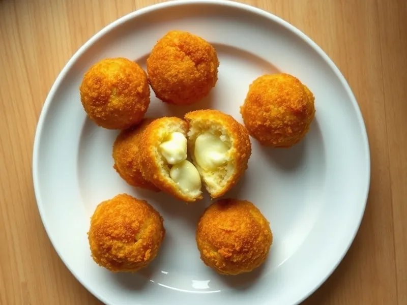

Аранчини из вчерашнего риса с моцареллой
Хрустящие рисовые шарики с тянущейся моцареллой внутри из оставшегося риса
30 мин3 порц.658 ккал на порциюБ 22 · Ж 35 · У 64Итальянская кухня
Открыть в приложении: порции, таймеры, список покупок
Продукты на 3 порц.
- Рис варёный (остался)450 г
- Моцарелла100 г
- Пармезан30 г
- Яйцо куриное2 шт
- Панировочные сухари80 г
- Растительное масло60 мл
- Соль2 щеп.
- Перец чёрный молотый1 щеп.
Как готовить
- Смешайте холодный рис с тёртым пармезаном, 1 яйцом, солью и перцем. Нарежьте моцареллу кубиками 1,5 см.
- Мокрыми руками возьмите 2 ст. л. риса, сделайте лепёшку, положите кубик моцареллы и слепите плотный шарик размером с грецкий орех. Получится около 12 шариков, 10 минут.
- Взбейте второе яйцо. Обмакните каждый шарик в яйцо и обваляйте в сухарях.
- Налейте масло в небольшой сотейник слоем 2 см и разогрейте на среднем огне 3 минуты.
- Жарьте шарики партиями по 4-5 минут, переворачивая, пока они не станут золотисто-коричневыми со всех сторон. Выложите на бумажное полотенце.
- Подавайте горячими, пока сыр внутри тянется.
Совет. Нужен клейкий рис, например круглый или от ризотто: рассыпчатый длиннозёрный не слепится. Шарики можно слепить заранее и держать в холодильнике до 1 дня.